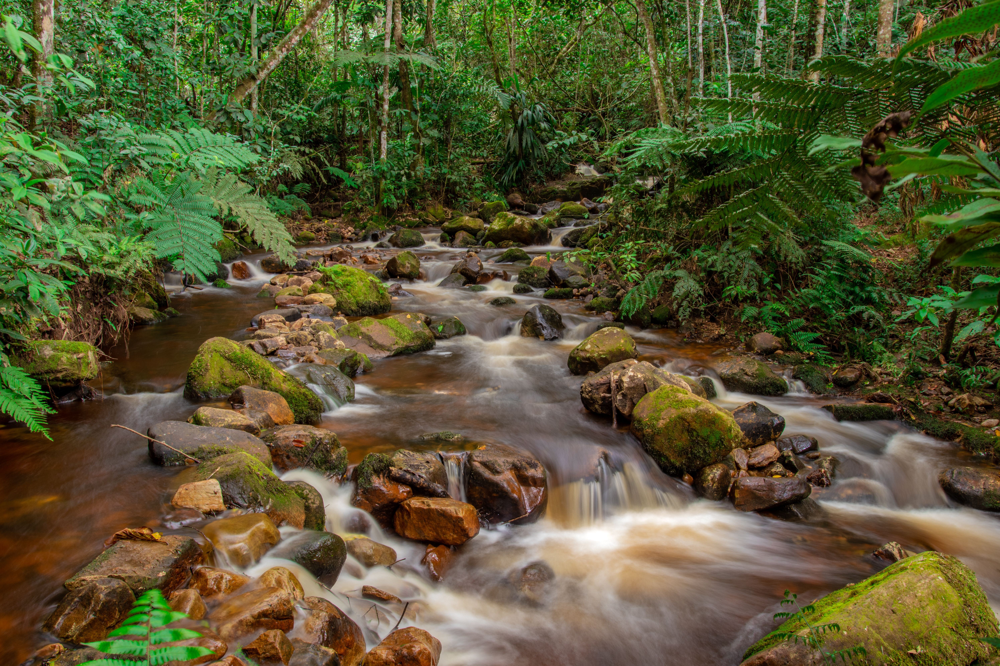

● Sobre o Projeto
O projeto Yby Py'a tem como objetivo conscientizar e demonstrar como a reciclagem pode contribuir para a redução do consumo de matérias-primas e da pressão exercida sobre os recursos naturais renováveis. Por meio da valorização do reaproveitamento de materiais e do descarte consciente de resíduos, o projeto busca incentivar práticas sustentáveis que reduzam os impactos ambientais e promovam o uso responsável dos recursos disponíveis. Além disso, o Yby Py'a pretende destacar a importância da participação individual e coletiva na construção de uma sociedade mais consciente e comprometida com a preservação do meio ambiente, mostrando que pequenas mudanças de hábitos podem gerar benefícios significativos para o planeta.